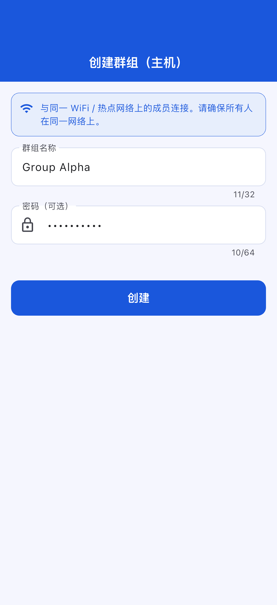
应用名称： OffLink
目标用户： 希望在同一 WiFi 网络内进行群组语音通话的用户
创建日期： 2026年3月9日
最后更新： 2026年4月11日
OffLink 是一款无需互联网，在同一 WiFi / 热点共享环境内即可进行群组语音通话的应用。 通过基于 WebRTC 的 P2P 通信实现低延迟语音通话。
使用场景示例：
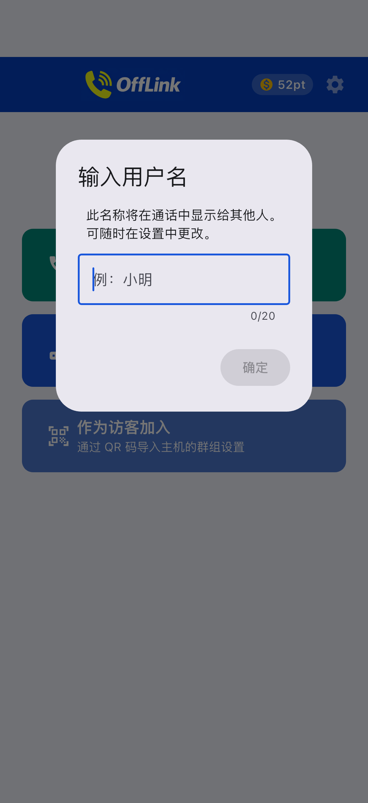
应用启动后的主页界面。通过底部的三个按钮开始操作。
OffLink 在 WiFi 局域网模式下运行。 所有人连接到同一 WiFi 网络（家庭 WiFi、手机热点、随身 WiFi 等）后， 由主机设备启动信令服务器，在同一网络内的设备之间进行语音通话。
要点： 无需互联网连接。只要路由器或热点设备在发送信号，就可以进行通话。
| 角色 | 支持设备 | 说明 |
|---|---|---|
| 主机（通话发起者） | Android / iPhone | 启动信令服务器并管理通话的设备 |
| 访客（参与者） | Android / iPhone | 加入主机创建的通话的设备 |
注意： 所有参与者必须连接到同一 WiFi 网络。
应用在首次启动时会一次性请求以下权限。 如果未全部允许，部分功能将无法使用。
| 权限 | 用途 | 拒绝后的影响 |
|---|---|---|
| 麦克风 | 语音通话 | 无法通话 |
| 相机 | QR 码扫描 | 无法通过 QR 注册群组 |
| 附近设备（WiFi） ※Android | WiFi 网络检测·主机搜索 | 无法检测主机 |
| 位置信息 ※Android | WiFi 扫描（Android 系统要求） | 无法获取 WiFi SSID |
| Bluetooth ※Android | Bluetooth 耳机连接 | 无法使用耳机 |
| 通知 ※Android | 通话邀请通知 | 后台运行时无法收到通知 |
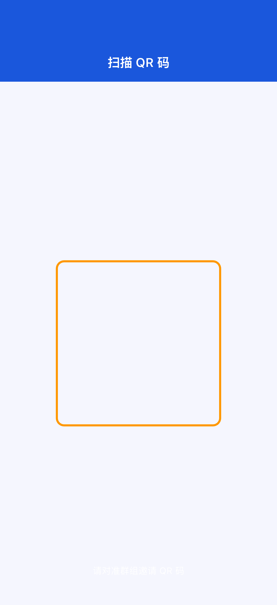
误拒权限的情况：
应用会弹出引导您前往设置页面的对话框。请前往设备的设置 → 应用 → OffLink更改权限。
（家庭 WiFi、热点共享、随身 WiFi 等）
无需事先创建群组，即可与连接到同一 WiFi 的成员立即开始通话。
Step 1： 所有人连接到同一 WiFi 网络。
Step 2： 点击主页的"立即通话"（绿色按钮）。
Step 3： 弹出用户名输入对话框。输入通话中显示给其他成员看的名称。
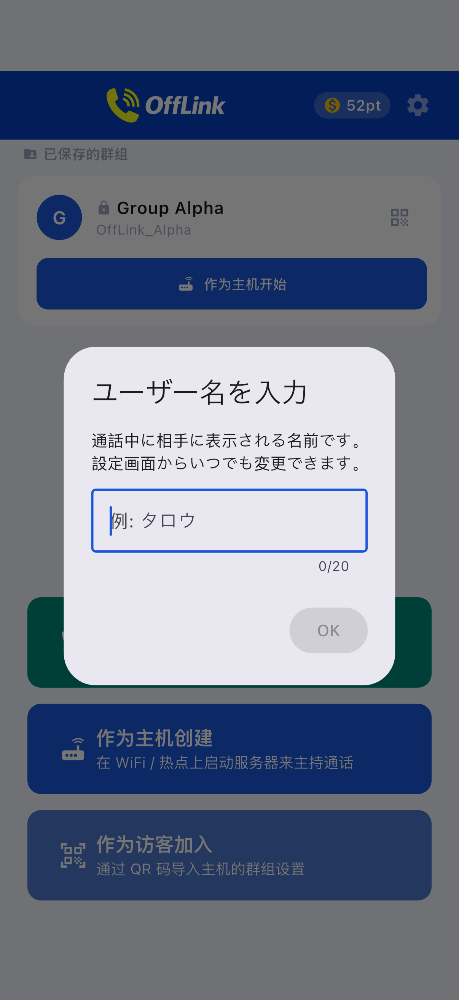
Step 4： 在积分消耗页面选择层级并开始通话（→ 参见 3-5. 积分系统）。
Step 5： 同一 WiFi 网络内的其他成员会自动收到通话邀请通知。成员加入后通话即开始。
如果已有主机：
同一网络内已有主机时，您可以选择加入已有通话或开始新的通话。
如果经常和相同成员通话，创建并保存群组会更方便。
Step 1： 点击主页的"作为主机创建"（蓝色按钮）。
Step 2： 在群组创建页面输入群组名称和密码（可选），然后点击"创建"。

小贴士：
- 群组名称请使用成员容易识别的名字（例如：骑行A组、仓库联络）
- 设置密码可防止陌生人加入（推荐）
Step 3： 选择创建后的操作。将弹出底部弹窗。
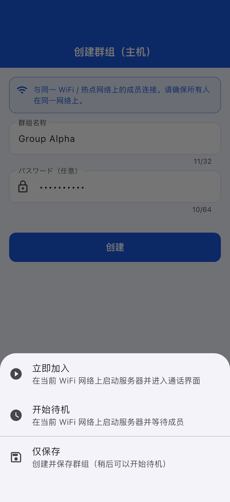
| 操作 | 说明 |
|---|---|
| 立即加入 | 在 WiFi 局域网上启动服务器，直接进入通话页面 |
| 开始待命 | 启动服务器等待成员连接 |
| 仅保存 | 仅保存群组信息（之后可随时启动） |
成员（访客）从主机获取群组信息后进行参加注册。
Step 1： 点击主页的"作为访客加入"（浅蓝色按钮）。
Step 2： 选择加入方式。有三种方法。
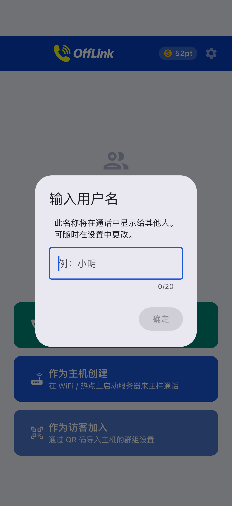
| 方法 | 操作 |
|---|---|
| 📱 扫描 QR 码 | 用摄像头扫描主机显示的 QR 码（最简单） |
| 📋 粘贴代码 | 粘贴主机通过微信等分享的代码 |
| ✏️ 手动输入 | 直接输入群组名称·SSID·密码 |
通过 QR 码共享群组（主机端）：
主机可以点击主页群组卡片右侧的 QR 图标来显示 QR 码。

其他成员可以通过 OffLink 的"扫描 QR"功能读取。
通过粘贴代码加入（访客端）：
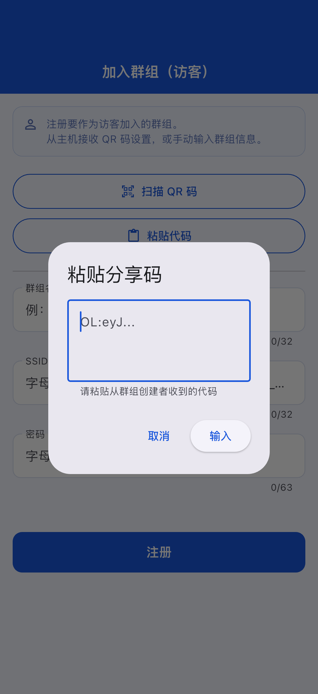
Step 3： 群组信息自动填入后，点击"注册"。
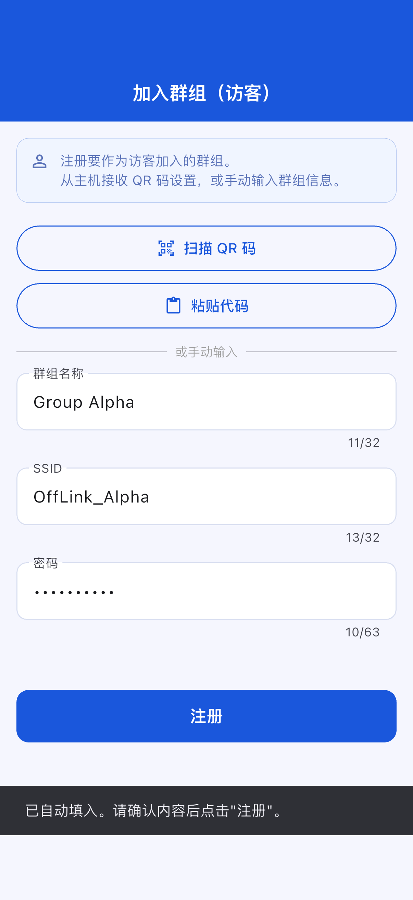
已创建或注册的群组会保存在主页上。
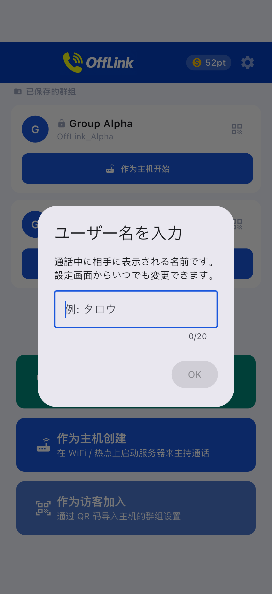
访客端加入页面：
输入用户名并选择要加入的群组。
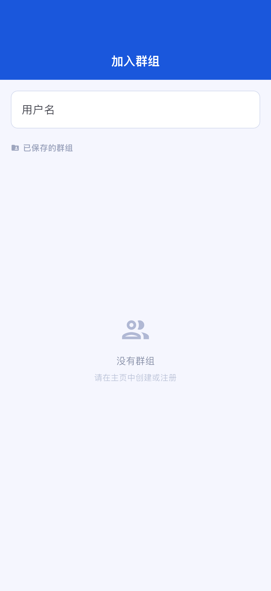
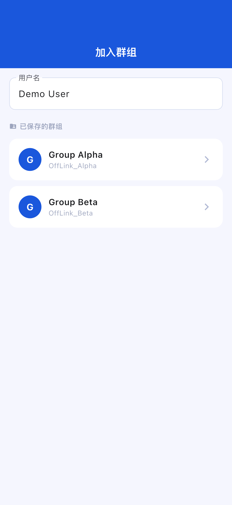
待命页面：
主机启动服务器后，待命页面会显示等待连接的状态。
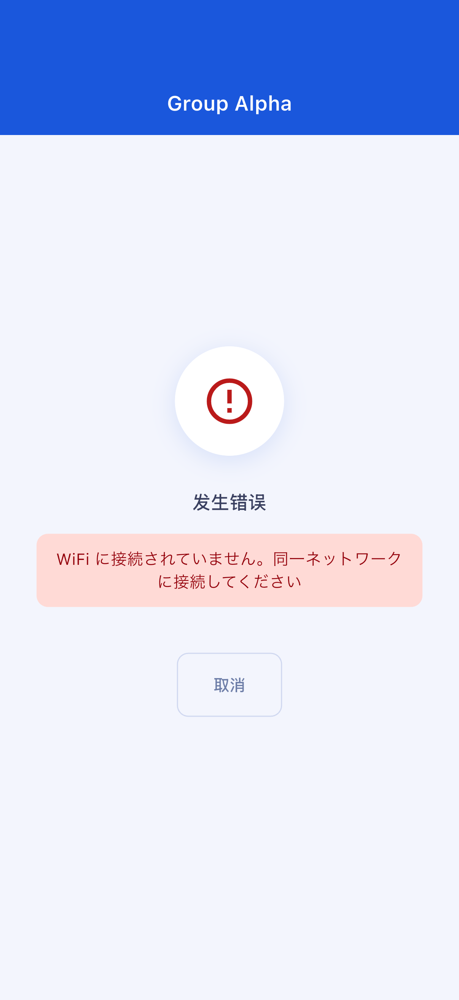
通话页面：
连接完成后自动跳转到通话页面。
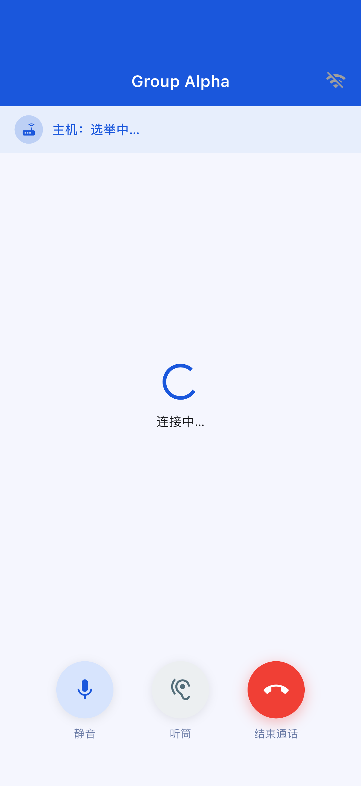
通话页面操作：
| 按钮 | 功能 |
|---|---|
| 🎤 静音 | 开启/关闭自己的麦克风 |
| 🔊 音频输出切换 | 在扬声器 / Bluetooth / 听筒之间切换 |
| 🔴 结束通话 | 退出通话 |
开始通话需要积分。积分可以通过观看激励广告获得。
| 层级 | 消耗积分 | 最大参与人数 |
|---|---|---|
| Standard | 10 pt | 4 人 |
| Large | 20 pt | 10 人 |
积分不足时： 观看激励广告即可获得 10pt。请点击页面上显示的广告观看按钮。
请检查以下事项：
当前版本不提供从 OffLink 内自动开启热点（WiFi 热点共享）的功能。 如需使用热点共享，请手动在 Android 设备的设置应用中开启热点功能，然后让所有人连接到该网络。
请检查以下事项：
请检查以下事项：
应用会弹出引导您前往设置页面的对话框。请前往设备的设置 → 应用 → OffLink → 权限，将所需权限更改为"允许"。
| 项目 | 限制内容 |
|---|---|
| 最大参与人数 | Standard: 4人 / Large: 10人 |
| 通话方式 | 仅限同一 WiFi 网络（WiFi 局域网）内 |
| 后台运行 | 可能因设备型号及系统版本不同而受限 |
| 群组保存上限 | Free 用户最多 5 个群组（Premium 无限制） |
| 项目 | 推荐配置 |
|---|---|
| Android | Android 5.0 及以上（API 21+） |
| iOS | iOS 13.0 及以上 |
| 电池电量 | 建议 80% 以上（主机设备电池消耗较大） |
| 可用存储空间 | 100MB 以上 |
| WiFi 环境 | 路由器 / 热点共享 / 随身 WiFi 等可连接同一网络的环境 |